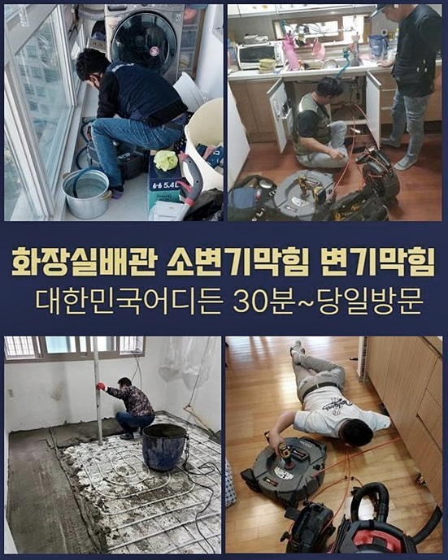
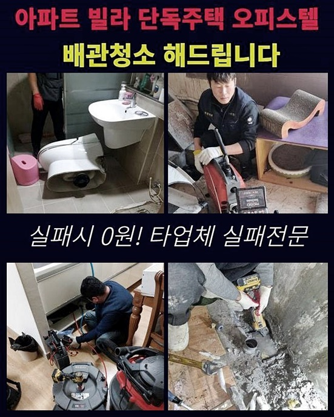
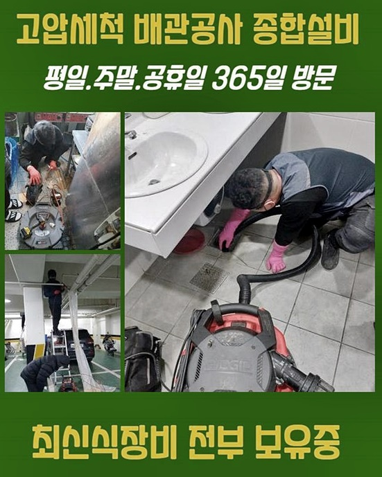
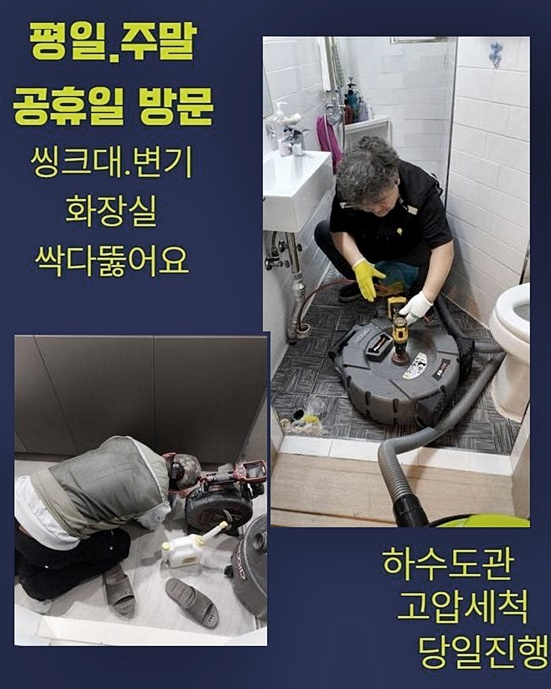
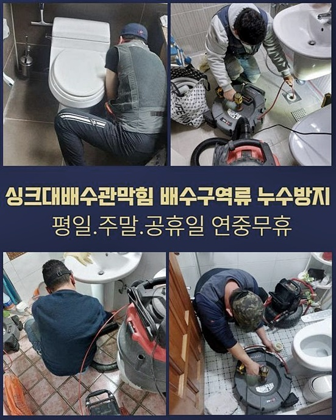
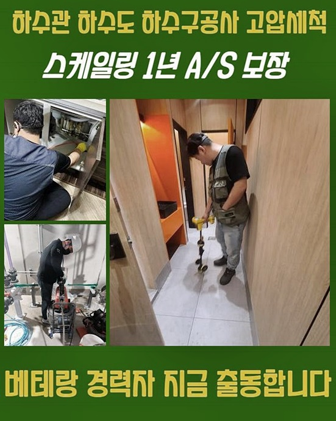

🏠 강서구 염창동화장실하수구뚫음 우장산동 고압세척비용 설비
서울 강서구 하수구막힘 전문 시공 후기

📋 작업 개요
- 위치: 서울 강서구, 강서구, 서울
- 서비스 유형: 하수구막힘, 배관막힘, 누수수리, 역류해결, 뚫는업체, 배관청소, 고압세척
- 작업 일시: 2024. 9. 14. 19:10
- 업체명: 하수구수사대 (010-5615-2118)
🔍 문제 상황
강서구 화곡동화장실하수구막힘 방화동 하수구뚫어주는곳 설비
배수관이 제 기능을 못할 때엔 방치하지마시고 서둘러서 방안에 대해 꾀하는것이 우선이죠
막힘들을 방치하면 예상치못할때 역으로 솟아오르는 경우도 생기며 누수문제로도 심화되어 작업에 방해요소가 발생됩니다
배수구에서 역류증상이 생겨난 상황일 시 할 수 없겠지만 앞서서 예방하고자 전문가의 도움들을 통해서 해결해 보시는 것이 우선입니다
며칠전 방문드린 곳은 상가가 함께 있는 건물이였습니다 해당 건물의 경우엔 여러가지의 가능성들을 포함하고있는 사례들이 꽤 많은 탓에 유선으로는 설명이 되는 사항들이 많지않아요
위같은 상황 탓에 빈틈없는 사태인지를 위하여 현장당도를 한 뒤 안내하는 수순을 거치고 있는데요
도착뒤에 상가들과 연결되어있는 가정집 배수로가 문제를 일으키게 되고 역류되는 문제까지 나타났습니다
물솟음이 발생된것과 더불어 복잡한 양상을 보이면 적재적소 쓰이게 되는 기계의 사용이 필요시 되죠
때문에 이럴땐 필히 심각한 문제들을 시정한 전문가를 통해 맡기셔야 하겠습니다
찾아뵙고 고객분의 설명들을 들은 후 배수관을 진단하기 시작했죠
하나의 문제가 아니라 예상치 못하게 여러지점이 막혀버린거면 진단해야하는 설비는 공용 하수라인이죠

🔎 원인 분석
💡 전문가 진단: 정밀 진단 장비를 사용하여 슬러지의 고착 여부를 판명하고 타격/세척 작업을 실시했습니다.
집수배관들을 들여다보기위해 주차장으로 내려가 천정쪽의 하수도로 이동했습니다
공동하수관을 확실하게 해결해도 이부분과 연결되어있는 관의 역류증세들이 안정적으로 시정됩니다
하지만 천장부에 자리한 라인인 까닭에 세척을 해주기에는 위험이 따랐는데요
샤프트로도 마땅한 해결이 안되면 사다리설치를 하여 저희가 해당 작업위치로 이동합니다
공동배수관이 막혔다면 내부쪽을 흡입한 후 뚫어내는 석션장치만으론 완벽히 시정해내는게 여간 쉬운게 아닙니다
샤프트장치로 고착물을 분쇄시키던지 때에 따라서 고압수청소가 실시되어야 하죠
어떠한 방식이 따라야하는건지 배수관을 체크해보고 그 이유에 대해 인지해보고자 내시경을 이용했습니다
내시경기기로 안측을 검수해본 결과 긴 기간에걸쳐 퇴적된 기름성분의 이물질들이 통수 라인을 방해하여 거꾸로 바깥으로 새어나오는 불상사가 발생한건데요
통로에서 빠져나가지를 못해 당연하게도 거주지로 이어진 각각의 배관으로 물을 배출시키면 물들은 역류를 거듭하게됩니다
그러므로 이 하수관을 고객에게 전달하고서 청소들을 수행해주었습니다
하수라인이 불그스름하게 보이는데 이런식으로 보이게되는 연유는 벽에 붙은 여타 이물들이 너무 많아서 그런거에요
이물이 존재하지않는 하수도라면 붉게 보이지않고 빈틈없이 관찰되나 이렇게 여타 이물들이 많다면 내시경에 적나라하게 목격됩니다

🔧 작업 과정
저희 하수구막힘의 업체가 간 고객님댁 증상을 해결해내기 위하여 샤프트장치를 운용해도 무분별하게 삽입해주지않고 필히 배관 내부 배수구를 확인해주며 진행합니다
아무래도 과한 물리력이 동반된 경우라면 하수관을 악화시키기도하고 잘못하면 물샘의 문제가 생겨날 수 있어서 믿을 수 있는 전문진에게 진행하시는 것이 우선이죠
플렉스 샤프트 내시경으로 꽤 오랫동안 탈락시켜주는 수순을 밟아나갔는데요
저희의 전문가들이 내방했던 거주지의 경우엔 잔해들이 축적되면서 굳어버린 슬러지가 다량이라서 여러가지의 과정이 수반되어야했습니다
메인집수라인에 막힘들이 생겨날 시 배수관이 길이가 긴 탓에 각 구간에서 뚫는 절차를 진행합니다
이러한 문제를 해결하고자 한다면 화장실내측과 가깝게 위치하고 있는 적재공간에도 연결되어있는 배수라인을 청소해주는 작업들도 속행되어야 했죠
점검구 부분을 열게된다면 오염물이 떨어지게 될 불상사가 벌어지기에 비닐을 써서 보양수순도 밟아나갔습니다
하단부로 하수들이 빠져나가게끔 연결도 해주었죠
혹시 이런 부분까지 주시하면서 진행해주지 않는다라면 단순히 통수는 가능해도 마무리들은 어설플 수 있어요
이러한 것도 전문진이 터득한 덕목이라 판단하고 있어요
찾아뵌 곳은 욕실공간과 이어져있는 하수관으로, 이물질들이 상당했습니다 통상적인 잔해가 배수관 기능을 저해시키는게 대부분이겠지만 큰 사이즈의 쓰레기가 문제가 되어버리기도 하죠
문제양상들을 파악해보니 샤프트장비론 확실하게 세척을 해주는것이 무리일거란 생각들이 스쳐 지나갔어요
이러한 때에는 알맞은 크란즐을 사용하여 세척하는것이 좋습니다
대형집수설비에 이용되는 고압청소기보단 크지않지만 성능에 있어선 뒤지지 않아서 현장에 알맞는 기기들을 고르는것도 전문인의 자질이라고 생각합니다
뚫기를 속행해주며 지점에따라 온전하게 청소되었는지 균열들이 안보이는지 진단하고 통수검열을 이행해주었습니다
저희전문진이 찾아뵈었던 현장들이라면 내시경기기로 배수장애가 해소된건지 테스트절차로 확인해주어야 마침내 수리가 마무리되었다고 생각해도 무방합니다
비로소 제대로 작업이 끝났죠 고객분에게 재발의 여지가 없는채로 하수관을 확인시켜드리고서
지금까지 배수가 어려우셨을 고객님이 안심하실수 있을거란 생각을하니 보람까지 느꼈어요


✅ 작업 완료
하수 시스템 결함이 발발한 탓에 수리 시 여러 잔해가 발견되요
문제들이 외부로 드러났을때에 빨리 수습할 목적으로 전문인에게 도움을 청하면 신속히 해결이 가능할지라도, 귀찮은 탓에 미루시면 비용과 시간을 크게 소모하여 진행할지도 모릅니다
심한 증상에 처한 상황이라도 저희들은 항시 안정성을 갖춰 해결해드리고 있습니다
저희들은 문제를 보고 알맞은 방식들만 실시해드리기에 걱정없이 맡기시면 됩니다
상가와 거주지등등 물사용이 불가피한 현장이면 어디가 됐든 청소해주는 것에 최선을 다하므로 항상지 부담없이 저희를 찾아주시면 되십니다




⚠️ 베란다 누수 및 방수 관리 방법
- ✅ 비가 많이 올 때 창틀 주변이나 아래층 천장에 얼룩이 생기는지 정기적으로 확인해 보세요.
- ✅ 우수관 주변 실리콘 마감이 들뜨거나 깨진 틈새가 있는지 손상 여부를 수시로 체크하세요.
- ✅ 베란다 바닥 타일의 줄눈(메지)이 소실되면 그 틈으로 물이 침투하여 누수가 유발됩니다.
- ✅ 누수 의심 증상 발견 시 방치하면 아래층 손실이 커지므로 즉시 전문가의 진단을 받으십시오.
💡 핵심 정리
- 확실한 장비 작업(내시경 점검 및 샤프트 스케일링)으로 원인을 뿌리 뽑습니다.
- 작업 후 1년 이내에 동일한 부위 재발 시 100% 무상 A/S 서비스를 보장합니다.
- 서울 · 경기 · 인천 전 지역에 24시간 언제든 긴급 출동할 수 있도록 항시 대기 중입니다.
❓ 자주 묻는 질문 (FAQ)
🚨 서울 강서구 하수구막힘 문제로 고민이신가요?
정확한 원인 진단과 확실한 시공으로 재발 없는 해결을 약속드립니다.
24시간 긴급 출동 | 서울 · 경기 · 인천 전지역 | 1년 내 재발 시 무상 A/S